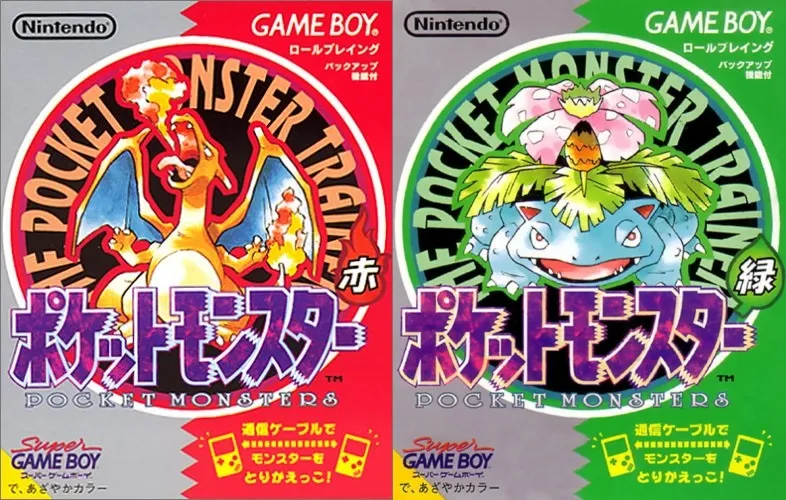
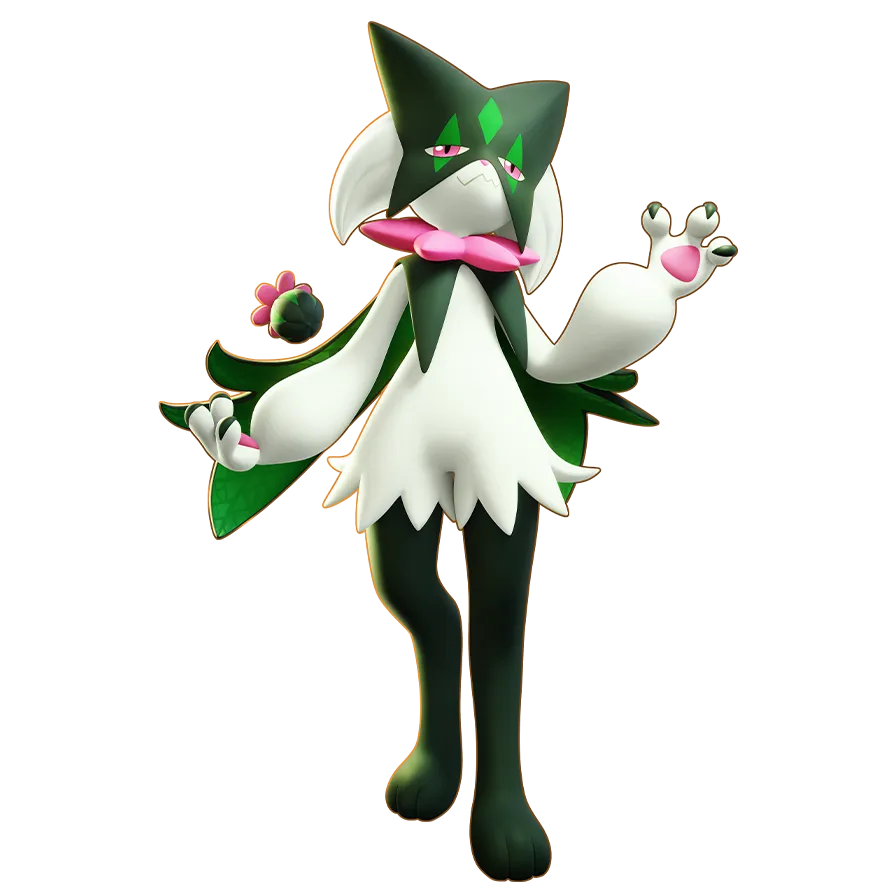
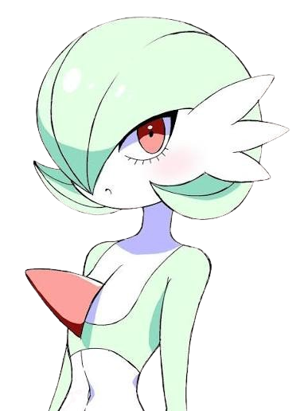

이미 시작된 글로벌 미디어 믹스
『포켓몬스터』와 장기 IP 생태계의 확립 (1990s)
1. 『포켓몬스터』의 탄생과 무한
다각화
1996년 게임 발매, 1997년 TV 애니메이션 방영 시작.
게임에서 출발하여 애니메이션, 카드, 영화, 완구, 캐릭터 상품으로 매체를 확장함.
2. 현대적 글로벌 IP 비즈니스의 원형
단일 작품의 흥행으로 끝나지 않고, 매체를 넘나들며
팬덤을 끝없이 재확대
하는 선순환 구조 확립.
90년대에 이미 게임·방송·상품이 유기적으로 연결되는 강력한
장기 IP 생태계
모델이 작동했음을 증명함.


